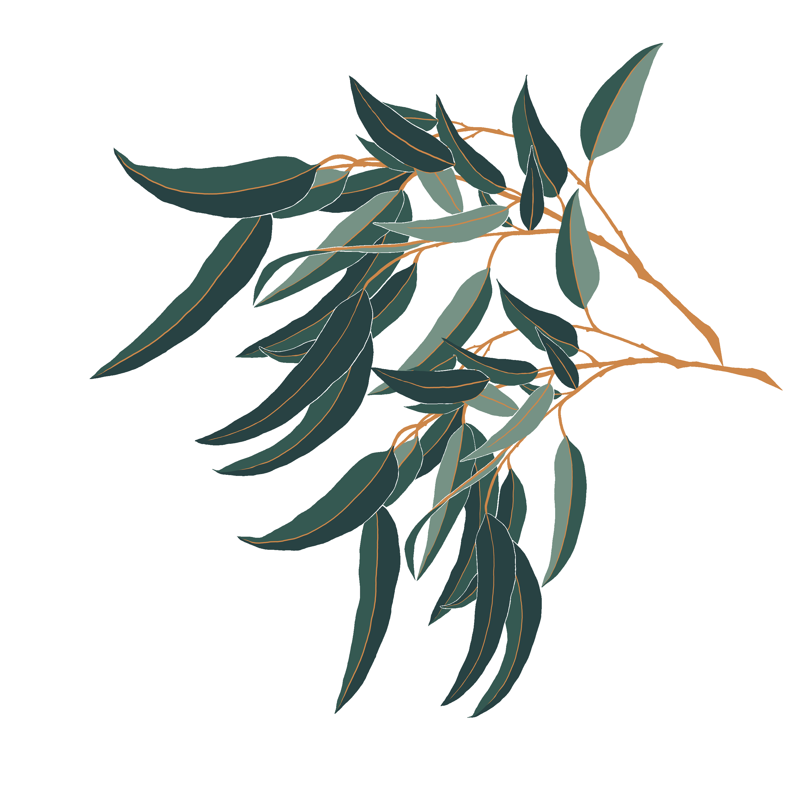
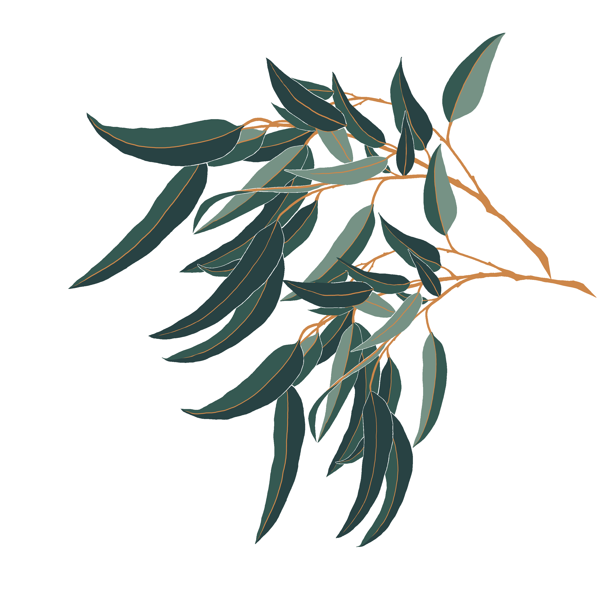

About Us
Through football, Her Strike aspires to engage and empower individuals and communities to form supportive environments that positively impact our world.
With the aim to create, connect, and inspire, Her Strike uses a holistic approach to focus on all areas that impact our health and wellbeing:
- our mind
- our body
- and our land
Our Story
Founded in 2011 by Holly-Lace Ayton, Her Strike was created with the intention of being an online media platform to promote and support women’s football in Tasmania. The organisation quickly built a following and became highly regarded within the footballing community, demonstrating the demand for such a forum within the state. Between 2011 and 2017 Her Strike, under the guidance of Holly-Lace, successfully provided information, conferences, and clinics. Career opportunity led Holly-Lace out of the state at the end of 2017, leaving the medium at a standstill. After a 3-year hiatus Holly-Lace linked up with her creative partners, Adelyn Ayton and Izzy Ottavi, to rebuild and reform the Her Strike brand into something more purposeful and integrated. After months of collaboration, Her Strike was reborn in 2020. Follow us on: